Simple and Easy Recipes
Trip to Colorado in Fall 2019
© 2016 Spicy World, Published on: Sep 30, 2019
Fall is our favorite season as it has variety of colors and outside temperature starts cooling down after the hot and humid summer. This year we decided to go for a road trip across the state of Colorado which is near from where we leave now (San Antonio Texas). Initially we decided to travel all the way by car but then decided to save some time and energy by Flying to Denver, Colorado from San Antonio, Texas. In this blog we tried to give you a very brief but crisp idea about our trip to Colorado which will help you in planning your trip.

Tour Starts:
We started our journey on 22nd September, it started by an early wake up alarm at 2AM and then usual stuffs, it starts with a tasty tea!!! After getting ready we called the Lyft to take us to the airport, it took $15 from our apartment to airport terminal (Frontier airlines terminal) which is quite reasonable for 8 miles ride at 4AM. The driver was super friendly.
We checked in our baggage which was just 48lbs (<50lbs) so we are good, make sure to measure the weight before you arrive at airport to avoid any additional expenditure at airport counter. We did the security check, Learning for the kids (ours is just 2.5years) you do not need to show the ID card at the TSA checkpoint and they can have their shoes on as well. But you cann't carry a sealed bottle of water even. We had one bottle so we drank the entire bottle of water!! Post check in we entered in the terminal and Coco (our little one) started playing and enjoying by running here and there which was quite a bit fun.
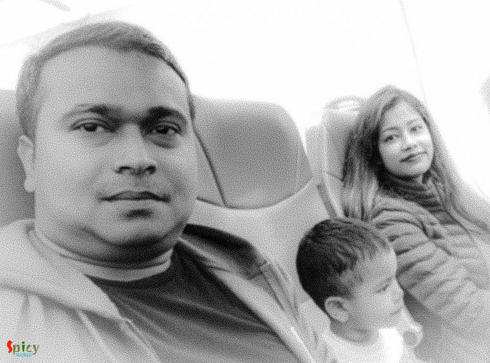We boarded the plane and it was on time, Coco traveled when he was 9 months and most of the time he was sleeping and this time he is a grown up buy so he initially was surprised when we entered in the aircraft but then he started enjoying too & soon after the flight take off he went to sleep. Learning, you must carry a small pillow or neck rest for the kids in case they are sitting in their own seat as the seat is wide for them to keep their head straight. And obviously we did not have that which is why he leaned on both of us on time to time basis.
After we landed, we picked up the check-in bag and changed the kid's diaper then we were picked up by Hertz shuttle bus which come in Island #4 in Denver Intl airport, we had to wait for 5 minutes for the bus to come and pick us up. They took us to the Rental Place where we booked our car rental, Learning, as we booked via AAA so the child seat was included as part of the rental as free. Initially we picked up a car which has low tire pressure, we asked for a different car and then they gave us a 7300 miles car, Subaru Outback. Driving a mid-size SUV we thought will be difficult but after hitting the road within 10 minutes it became the most likely thing to drive. We drove ~1100 miles in 5 days. Learning, you need to first know every switches and buttons before hitting the road, because newer cars has plenty of censors and buttons for almost everything.

We stopped at a Walmart to pickup some important stuffs for the kid & his food as he loves food prepared by mom, e.g. few potato, onion, tomato, vegetable oil etc. We bring rice, daal, salt, sugar with us. And we booked our hotels in advance and all of them has kitchen included so that we can cook for him.

Day 1 (290miles / 22nd September 2019):
We started the longest road journey towards Grand Junction which is about 280miles from Denver International Airport. In the morning we stopped at McDonald's and had some breakfast and made Coco eat something so that he is prepared for the long road trip. We stopped at Vail (after 120miles), its a small city named after Charles Vail (Highway engineer), it mainly offers Ski and it has lots of beautiful looking ski resorts. We stopped there and walked a little bit to stretch ourselves.
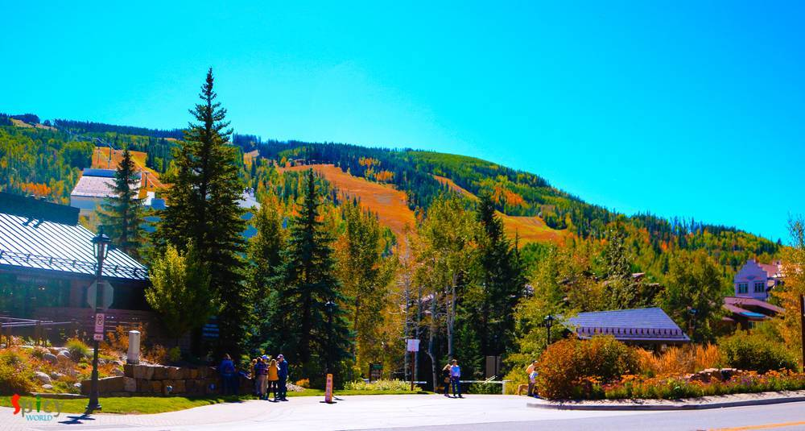
Then we started again towards Grand Junction, and the road after Eagle was beautiful. We had a quick lunch at a Subway in Eagle and fueled the car. I-70 (Interstate 70) is in 2 layers and the mountains are gorgeous on the way. We crossed Glenwood Springs and reached our hotel in Grand Junction which is another 150miles.
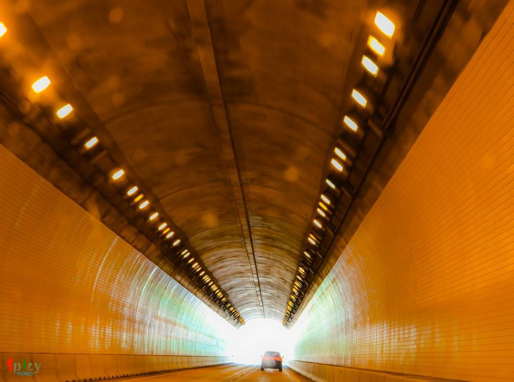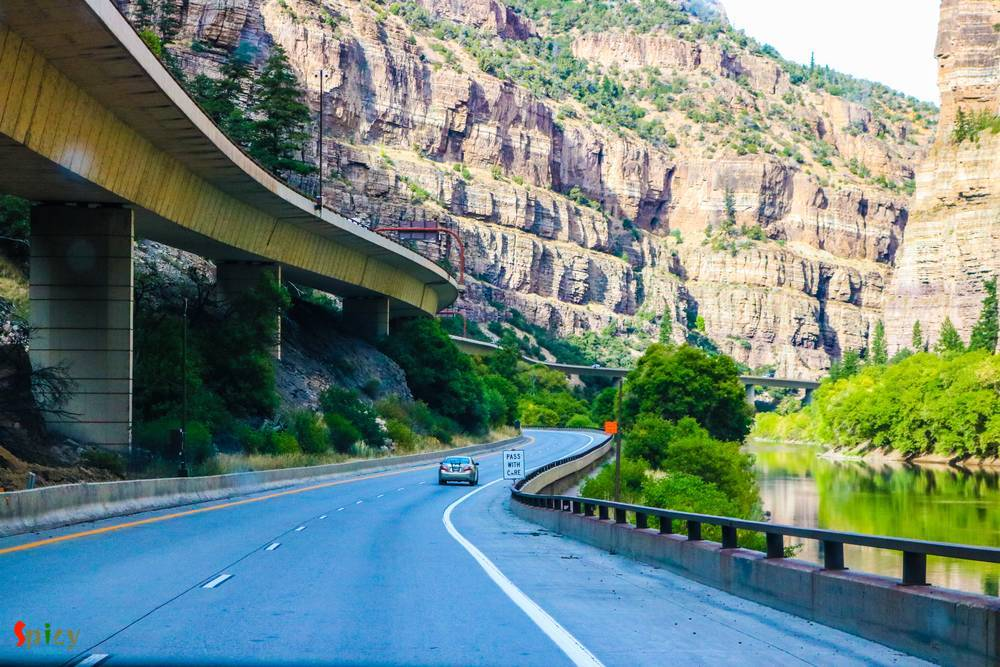On the way we stopped at Mount Garfield which is close to Grand Junction and it has a different color texture. The day ended with a nice dinner at our favorite Chili's Grill & Bar.
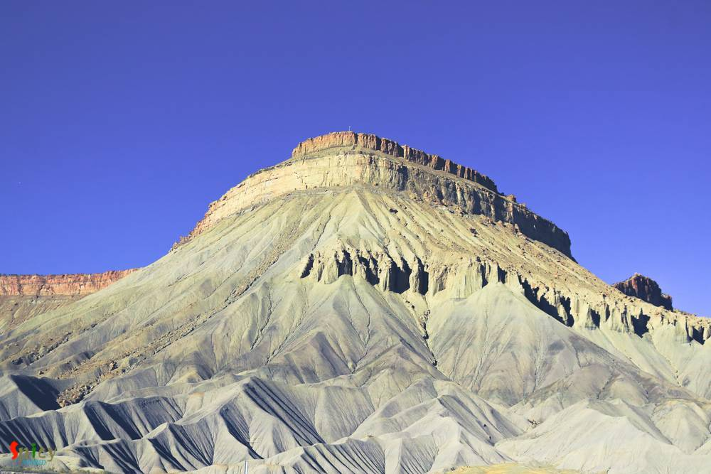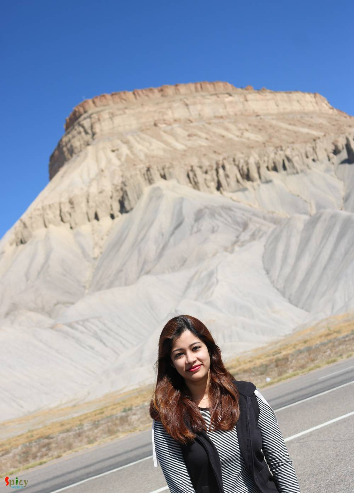Day 2 (187miles / 23rd September 2019):
We initially planned to visit the Arches National Park which is located in Utah but then decided not to end up driving 400miles for the day, instead we visited the beautiful "Colorado National Monument" in the morning after having a quick breakfast at Taco Bell. With this the tough driving started in the mountain roads. Learning, It has some roads which are really tough to drive with a non AWD or 4x4 car.
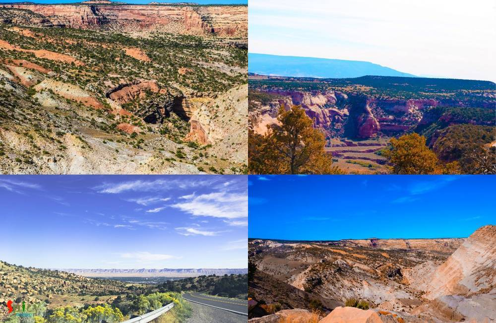We re-fuled the car and started heading towards Glenwood Springs & had to stop to feed Coco in a rest area in Parachute. It was a sunny day, so Coco enjoyed few minutes with Mom by walking around the place.
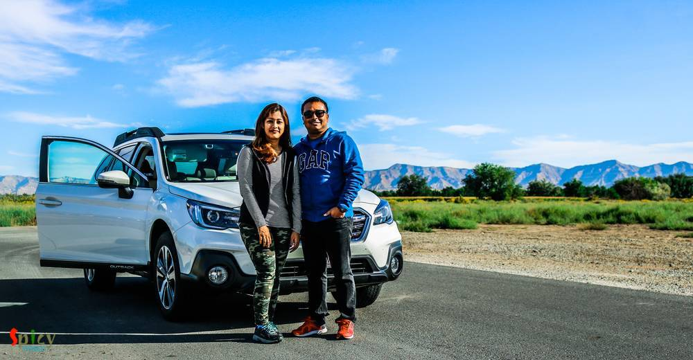We started again, next stop was Glenwood Springs, We parked the car at the entrance of "Glenwood Caverns Adventure Park" (parking here is free) and then we took the Gondola Ride ($19 per person and under 3 years it's free) to go to the actual park which is located at the top of the mountain. The gondolas are covered and can hold 4 to 6 persons and we took the baby stroller in it. We get down from the Gondola and the part is really beautiful, if you are adventure lover, you must take all the rides and the cave tour as well (we wanted to have the cave tour but the baby stroller is not allowed in there), if you want to take all the tours you must but the entire pass before boarding the Gondola and the cave tour has its own price as well. But the park was at the top of the mountain and you can get down from the Gondola and spend as much time as you can. It's quite beautiful. Learning, you must go on a weekday to avoid crowd which we did!!! We took the Gondola back to come down. By now its already 2PM there, so we quickly stopped at a Subway to have a quick lunch and go back to the action.
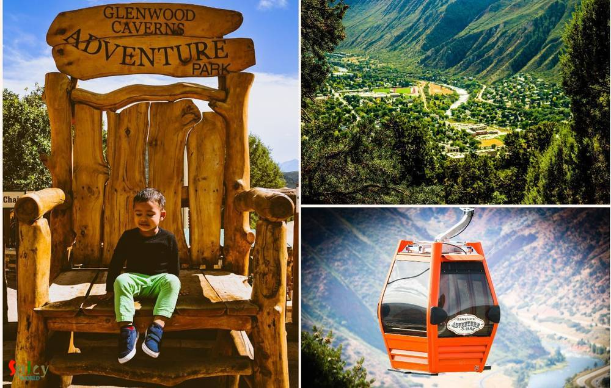We stopped at the Glenwood Hot Spring pool and it was nice to see lot of people out there. We did not go into the pool instead we started heading towards our next hotel in Eagle & we were mainly preserving our energy to see some beautiful scenic roads from Glenwood Springs to Eagle which we noticed the day prior. Learning, if you want to go into water in Glenwood Hot Spring, the parking is very tight even in the weekdays, so plan early and definitely bring your own swim suites or else you can rent them as well.
We stopped at a beautiful river side (Eagle River) rest area "CDOT Rest Area: Bair Ranch" (as per Google map's timeline), I think its Exit 121 on I-70. It has a nice park where you can walk in green grass, sit and relax also you can put your feet down into the river water. We stopped there and spent about 30 minutes and Coco really enjoyed by running around the place. Learning, we took the next exit and it was a dead-end, so keep some time in hand and plan for driving 10miles to comeback to where you took a wrong exit, this is because there are some constructions & maintenance going on in few places.

Finally the day ended by reaching at our hotel in Eagle and with a delicious Chinese food at "Gourmet China".
Day 3 (209miles / 24th September 2019):
Morning started early as we target to visit the Aspen's beautiful Maroon Bells, we fueled the car the previous night. To visit Maroon Bells by your own car (driving) you need to enter before 8AM, although we started at 6AM due to a wrong exit we had to spent additional 30minutes and that took us a while to reach and we end up parking our car at "The Ritz Carlton Destination Club" which is at "Aspen Highlands", which costs $10 for parking. Then we boarded the shuttle bus which starts in every 15/20minutes from there and take you to the Maroon Bells, the bus costed $8 per person and kids like Coco is free there. The bus ride was in-fact quite cool, the drive shared lots of info about the place, the history, the community around the place and the avalanches & their destruction.
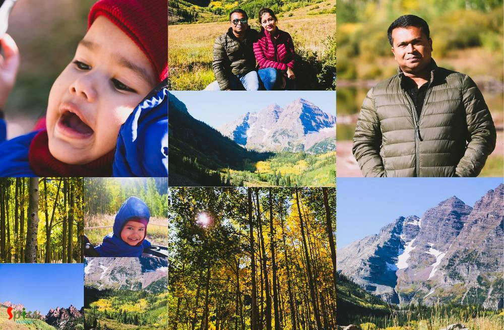We spent few hours there by the lake and the mountains, it is very beautiful sight and the walk is pretty much awesome. It was a bit cold as its at an elevation of 14,000ft. So we had to wear jackets and for Coco the greatest of all "Monkey Cap". But after walking a bit we started getting tired due to less oxygen and also we need to get rid of the jackets. We took the shuttle bus back from there and comeback to the parking spot.
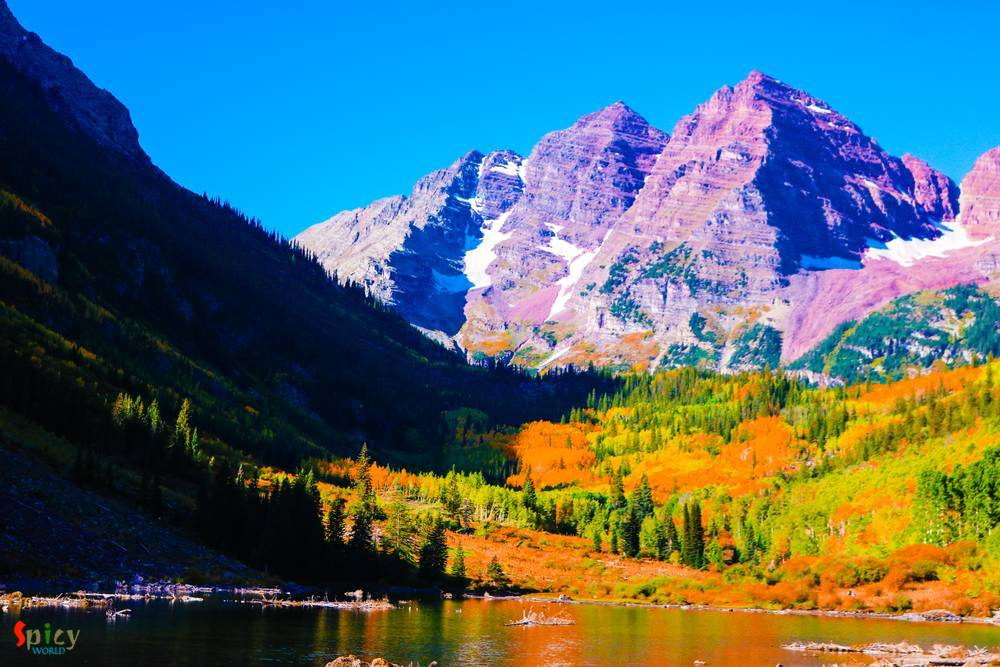If you have plans to visit Independence pass, which was in our bucket list, you must eat here only to enter into the Independence Pass because there is no restaurants or fast food places after this spot for next 45miles. Learning, also if you are less in gas, you must put some at this point because the road around Independence Pass is very much hilly and that requires lot of gas and the next gas station is after 45 - 50miles.

The Independence Pass was a superb driving experience, the yellow colors were every where and the views were awesome in the fall. The mountains, the nature everything was colorful around this drive. There are some tight curves on the way and some spots where you need to stop your car and give others to pass which is fun activity.
We stopped at Twin lake, which is at the other side of Independence Pass, stretched our legs and then started for the hotel at Eagle (the hotel from previous night). We stopped few times on the way whenever we find some scenic place. Coco enjoyed running here are there and we played and enjoyed that quite a lot. Finally we reached hotel and our Day 3 has come to an end with some quick dinner from Subway.

Day 4 (189miles / 25th September 2019):
Day 4 started with an adventure, the road was not quite good towards "Grand Lake" from our hotel. But after driving about 2hours for 98miles we reached the most beautiful & clean city of the entire trip so far. There we parked our car and had our breakfast. Mountains everywhere, Coco enjoyed playing in the green grass. The roads were empty as its 10AM in the morning. Only tourists but again as its middle of the week its not at all crowded. After spending an hour there we started for the ultimate destination. Guess what?? yes .... its in next paragraph.
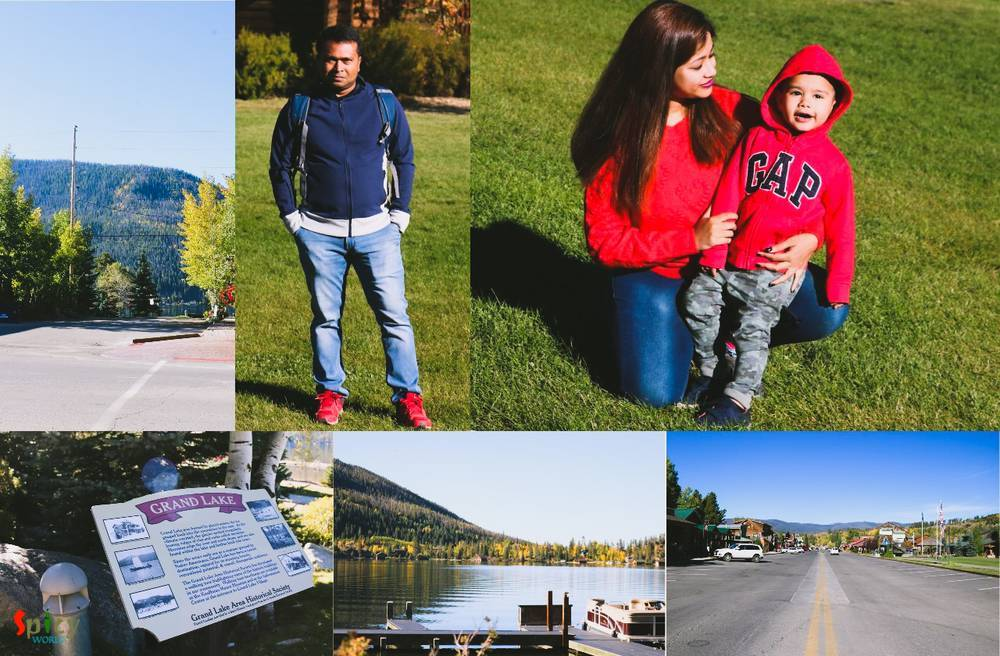Yes we entered in the "Rocky Mountain National Park", the road is absolute beautiful and they charged $25 for a day pass, totally worth it. We drive through some difficult mountain roads (you must have gas in your car to avoid panic of calling someone for gas!!!), finally reached 11,796ft high "Alpine Visitor Center". Learning, It's windy out there, you need to have proper winter dress. You can also see some snow here and there. Once again Coco has his "Monkey Cap" on and we had our jackets on. The valley down below looks awesome.

We spent about an hour there and then started going towards the other end of the park, towards "Estates Park" via Rainbow Curve Overlook and once again the beautiful mountain roads are still inviting us. We reached at "Estates Park" and had our lunch at a restaurant called "Thai Kitchen" (obviously after refueling the car), but it has Indian food too. Coco doesn't like rice and daal, so we had to take him to McDonald's for his favorite kids meal.


After that we started driving towards our hotel at Denver (Glendale/ Cherry Creek), on the way we spent some time in "Colorado State Capitol".
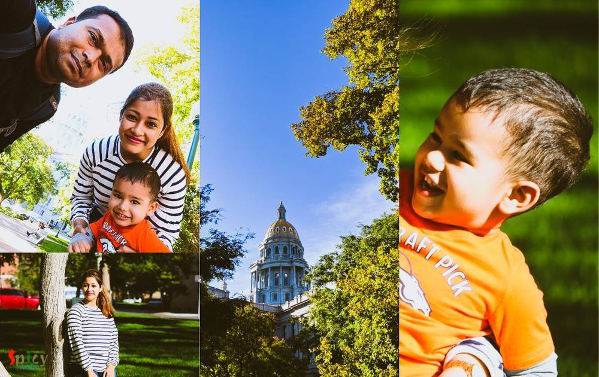Day 5 (169miles / 26th September 2019):
We are supposed to get into a flight at 9:15PM in the evening, as the checkouts are at 11AM from hotel, so we decided not to extend the hotel for those few hours instead visit Garden of the Gods which is near Colorado Springs. It was a good choice. We started at 10:30AM and reached by 11:45PM. It was less crowded as its weekday. The visitor center is well maintained and has lots of info available about the place. They have a nice place in the 1st floor from where you can take some nice pictures of "Garden of the Gods". We drove inside the park and stopped few places, it was a very nice and enjoyable drive.
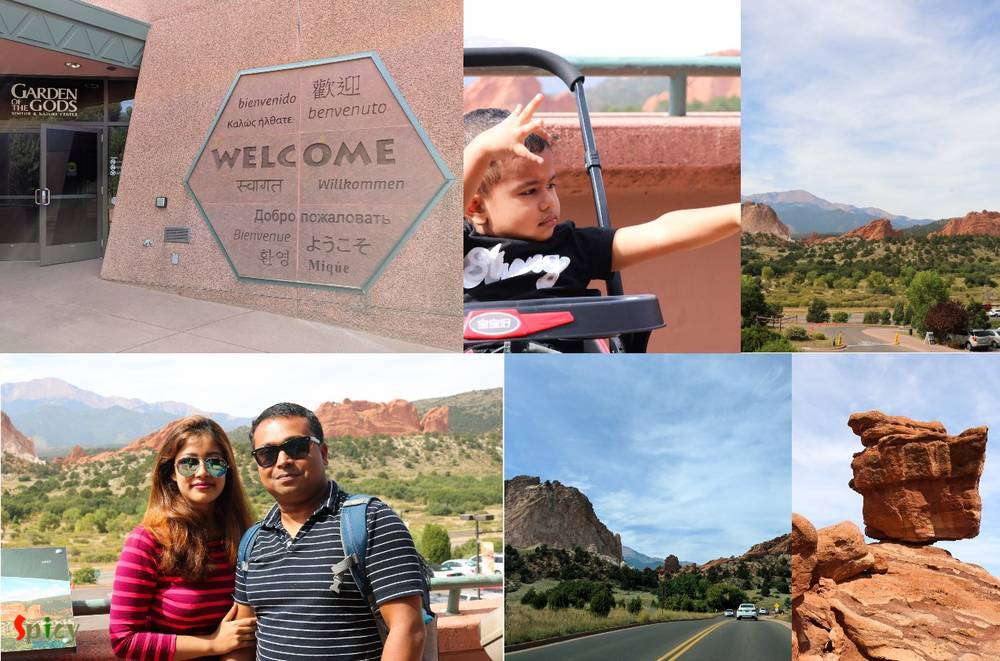Arpita doesn't want to end the trip!!!! she insisted to find something else, so we decided to go and visit "Cave of the Winds Mountain Park" which is also on top of a mountain, the view from the visitor's place is breathtaking. Learning, we cann't go for the cave tours because they don't allow baby strollers. We decided not to go to Pikes Peak because the drive it going to take sometime (not far from here but as you need to go on top of the mountain its a bit time taking drive), and after looking at the Alpine visitor center its more or less the similar place so we skipped that.
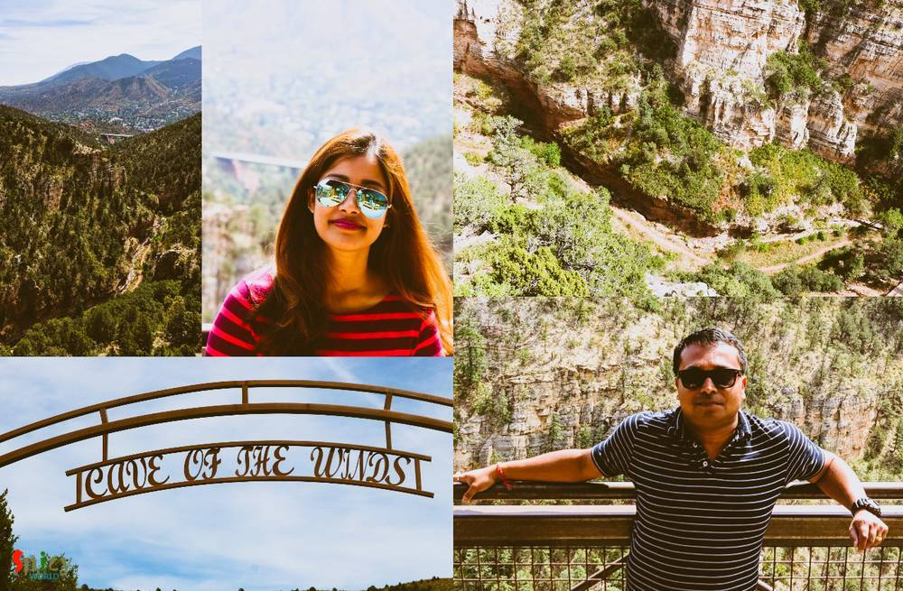We drive back to return our rental car and on the way we had very good late lunch at the our favorite "Chili's Grill & Bar" near Monument, Colorado.
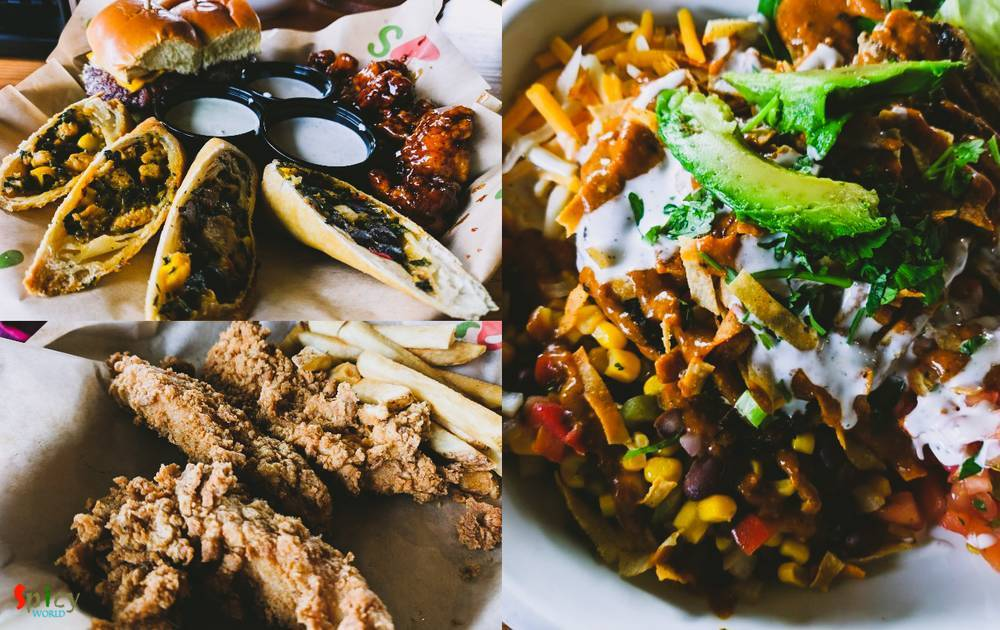We reached at Denver Airport and checked in our baggage around 5PM by the return shuttle of the rental & had dinner with mixed food from Panda Express and McDonald's, McDonald's was for Coco only, but he ate my Fried Rice from Panda Express.
The flight was on-time, we took Lyft to comeback to our sweet apartment at 1AM.

Tour Ends:
Hope you enjoyed reading about our trip and get to know lot of info about the Colorado, so if you or your friend wants to visit Colorado and see the beautiful places around Colorado, please read or refer this blog.
Tags:travel